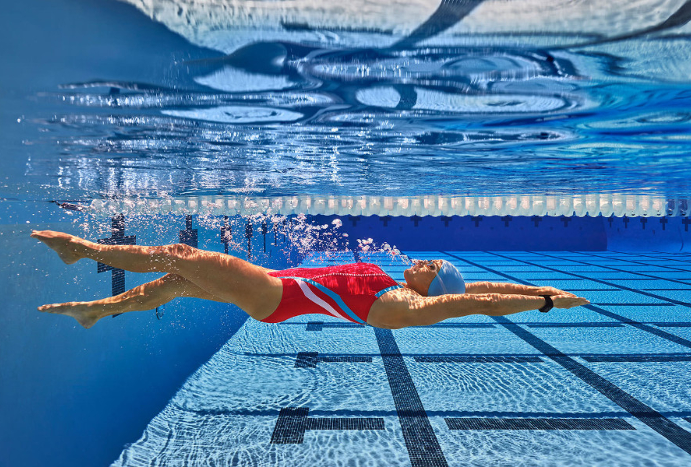
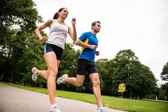
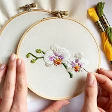

Bienvenido a mi página de GitHub
¡Hola, mundo! Este es mi primer GitHub Page.
¡Hola, mundo! Este es mi primer GitHub Page.
Practico natación regularmente. Es una actividad que me ayuda a mantenerme en forma y relajarme.
Soy una apasionada de la comida. Me encanta probar nuevas recetas y experimentar en la cocina.

Disfruto correr al aire libre. Me gusta participar en carreras locales y mantener un estilo de vida activo.
Bordar es una de mis actividades favoritas. Encuentro mucha satisfacción en crear diseños hermosos con hilo y aguja.
Me encanta resolver rompecabezas en mi tiempo libre. Es una excelente forma de ejercitar la mente.
Estoy especializada en matemáticas aplicadas. Mi enfoque principal está en la modelación matemática y análisis de datos.